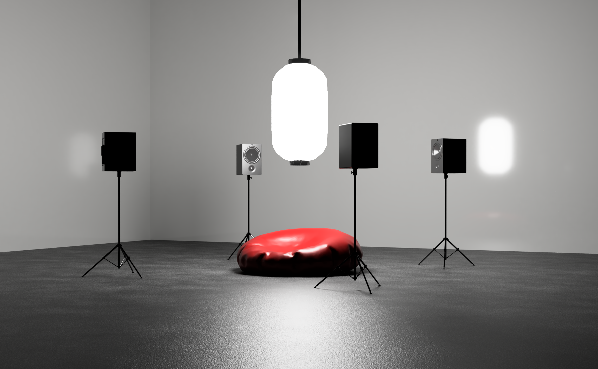
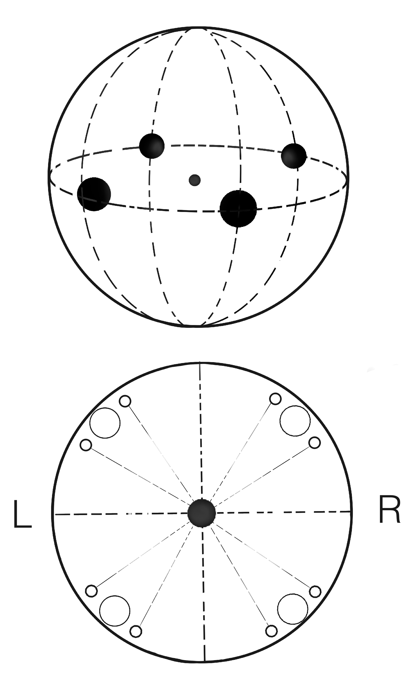

The exploration of the common question, “Where are you really from?” was inspired by the
conceptual structure of the Her Noise Archive. Irene Revell (2023) emphasized that the
archive isn't just associated with “feminism”, but encompasses a broader theme of “power.”
It’s designed to provoke power imbalances and explore the ways individuals can
interrogate power relations and dynamics. The question itself, “where are you really
from?,” holds a higher significance within this context, exploring how power dynamics not
only dictate who poses the question but also influences who becomes the subject of these
inquiries.
For this project, I conducted four interviews, myself included. Each individual was either a transracial adoptee or someone with a diverse background. Some of the questions I posed included:
Towards the end of the interviews, participants shared suggestions for more considerate ways to ask questions:
For this project, I conducted four interviews, myself included. Each individual was either a transracial adoptee or someone with a diverse background. Some of the questions I posed included:
- How have you dealt with or responded to stereotypes and racism?
- Have you struggled with belonging?
- How would you imagine a future where questions like, “where are you really from?” may no longer be asked?
- Have you struggled with belonging?
- How would you imagine a future where questions like, “where are you really from?” may no longer be asked?
Towards the end of the interviews, participants shared suggestions for more considerate ways to ask questions:
- What is your ethnicity?
- What is your background/heritage?
- What languages do you speak?
- What is your background/heritage?
- What languages do you speak?
Installation Setup
“Where are you really from?” will exhibit with a quadraphonic sound system, assigning
each speaker to play the voice of one of the interviewees. A circular seating arrangement
at the center of the speakers invites listeners to engage with the work and the seating
encourages audiences to spend more time with the piece. The speaker height
would be slightly lower to further encourage individuals to take a seat.
The duration of the piece represents the time that it preciecly took for the interviewees to feel comfortable speaking.
This is the same amount of time I wanted to give to the audience
and have them listen to how we gradually unravel ourselves over time.
